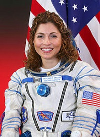
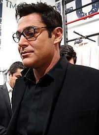

Welcome to Iran
به ایران خوش آمدید
| Anousheh Ansari | Mohammad Reza Golzar |
|---|---|
|

Anousheh Ansari is an Iranian-American engineer, co-founder, and chairwoman of Prodea Systems. She was born September 12, 1966, in Mashhad, Iran. Her earlier work accomplishments include as being a co-founder and CEO for Telecom Technologies, Inc. (TTI) Her family sponsored the Ansari X Prize. On September, 18, 2006, she became the first Iranian in space, also the first self-funded woman to go to space. |

Mohammad Reza Golzar is an Iranian singer, model, and actor. He was born on March 21, 1977 in Mashhad, Iran. While in the Islamic Azad University, he studied Mechanical Engineering. He started out in a famous Iranian pop group called The Arian Band. After being asked to be in a performance twice, he started getting popular for his acting skills. Then, he starred in many films and still does to this day. |